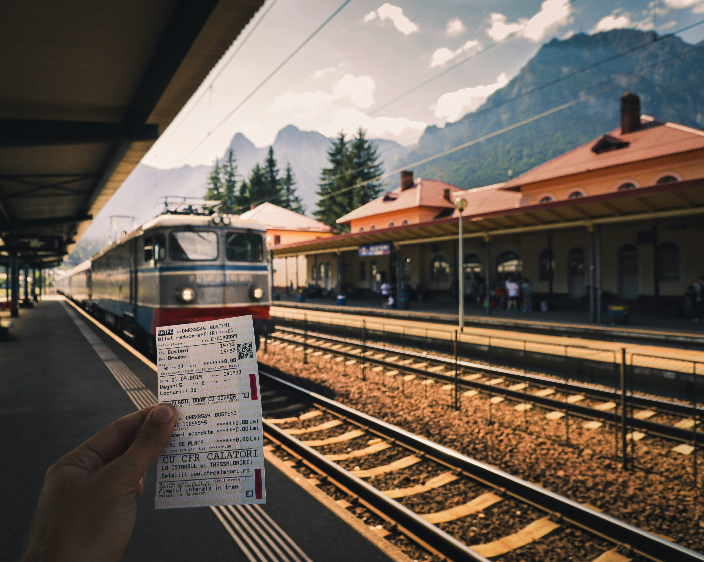

Interrail-lippu on junamatkustamiseen tarkoitettu lippu, joka on voimassa useissa
Euroopan maissa.
Interrail lippuja on kahta eri tyyppiä Global pass ja One Country pass. Interrail-lippu tarjoavaa
joustavan ja kätevän tavan matkustaa Euroopassa junalla. Lippuja voi ostaa joko digitaalisesti
verkkosivuilta tai perinteisenä korttina matkatoimistoista tai Interrailin myyntipisteistä.
Digitaaliset liput tallennetaan älypuhelimeen, ja niitä voi käyttää suoraan junissa ilman fyysistä
korttia, mikä tekee matkustamisesta entistä helpompaa. Digitaalista lippua suositellaan myös koska
se pysyy aina kätevästi ja varmasti mukana, siinä missä fyysinen lippu saattaa hävitä matkalla.
Interrail-lippuja on saatavilla eri versioissa, kuten 5, 10 tai 15 päivän lippuina, tai jopa
kolme kuukautta voimassa olevana lippuna. Valinnan voi tehdä oman matkasuunnitelman ja aikarajojen
mukaan. Lippuja löytyy eri hintaluokissa, ja niistä on erityisiä alennuksia alle 12-vuotilaille,
nuorille (alle 27-vuotiaille) ja eläkeläisille (60+ vuotiaille).

Lipun voi ostaa Interrailin virallisilta verkkosivuilta tai
valtuutetuista
jälleenmyyjistä,
kuten matkatoimistoista. Digitaalisella lipulla saat matkustuspäivän lipun näytettyä suoraan
puhelimesta
junassa. Perinteisen kortin saa postitse tilaamalla. Lipun voi ostaa hyvissä ajoin tai juuri
ennen
matkaan
lähtöä, mutta on suositeltavaa ostaa ne etukäteen, jotta varmistaa lipun saatavuuden.
Etenkin
paperiversio
kannattaa tilata ajoissa. Linkkejä luotettaviin sivustoihin jotka myyvät lippuja:
Interrail
VR
Interrail One Country pass-lipulla pääset matkustamaan yhden maan
sisällä.
Lipun
hinta, sekä matkustuspäivien
määrä ovat maakohtaisia ja vaihtelevat hieman maiden välillä. Matkustuspäiviä on yleensä
3, 4, 6, 8 tai
10
ja
matkustuspäiviä voi käyttää kuukauden ajan. One country pass on hyvä valinta jos haluat
tutustua
syvällisemmin
yhteen maahan. Tämä passityyppi voi myös olla hyödyllinen, jos et halua huolehtia monen maan
rautatiejärjestelmän aikatauluista tai matkapäivien jakamisesta eri maihin. Hinta One
Country
passilla
pyörii 50€ - 250€ välillä.
Interrail Global Pass kattaa 33 Euroopan sisäisessä maassa matkustelun. Global
Passia löytyy kahta
eri versiota: Flexi pass ja Countinuous pass. Flexi passilla valitset joustavasti matkapäivät
passin voimassaolon sisällä esimerkiksi 5 matkapäivää kuukauden sisään. Flexi pass mahdollistaa
yhdessä kohteessa pidempään olemisen. Countinuous passin avulla voit matkustaa rajattomasti passin
voimassaolon ajan, eli esimerkiksi kuukauden ajan voit matkustaa vaikka joka päivä. Tämä on parempi
vaihtoehto, jos aiot matkustaa intensiivisesti ja hyödyntää passin täyden vapauden. Valinta riippuu
siitä, haluatko joustavuutta matkapäivien suhteen vai jatkuvaa matkustamista. Hintahaarukka Global
passille on noin 250€–700€.
Alle 12-vuotiaat lapset voivat matkustaa ilmaiseksi aikuisen seurassa Interrail Passilla.
Lisäksi nuorille 12–27-vuotiaille sekä yli 60-vuotiaille on tarjolla alennettu hinta passille.